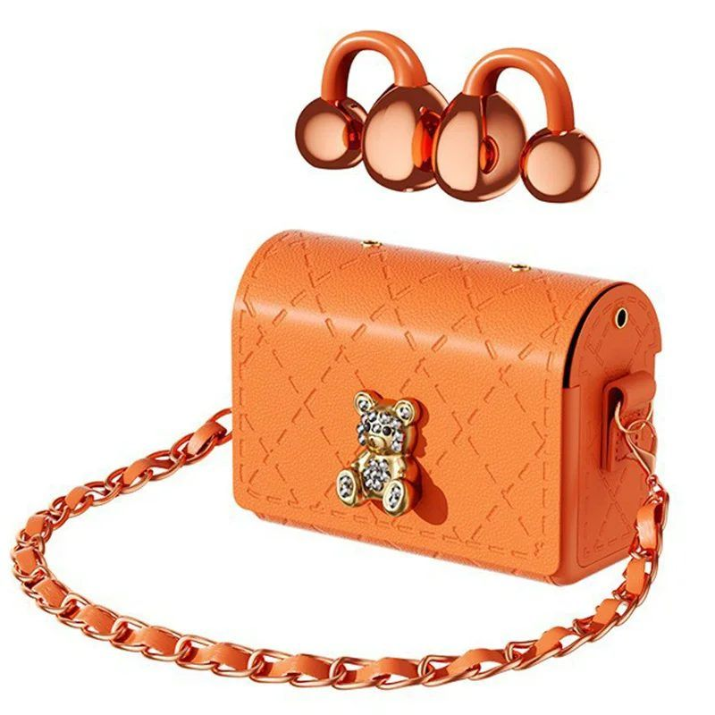
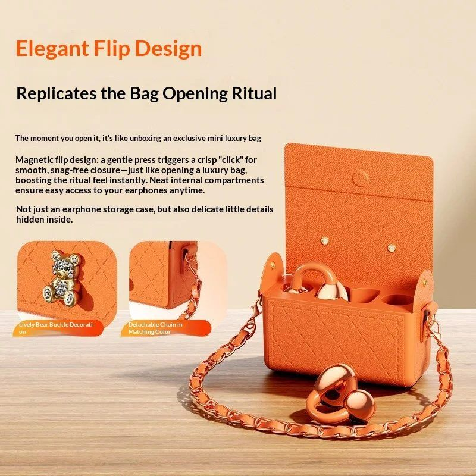
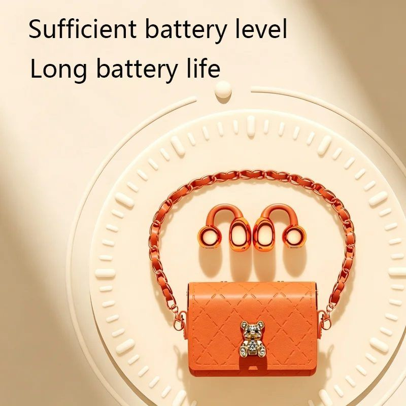
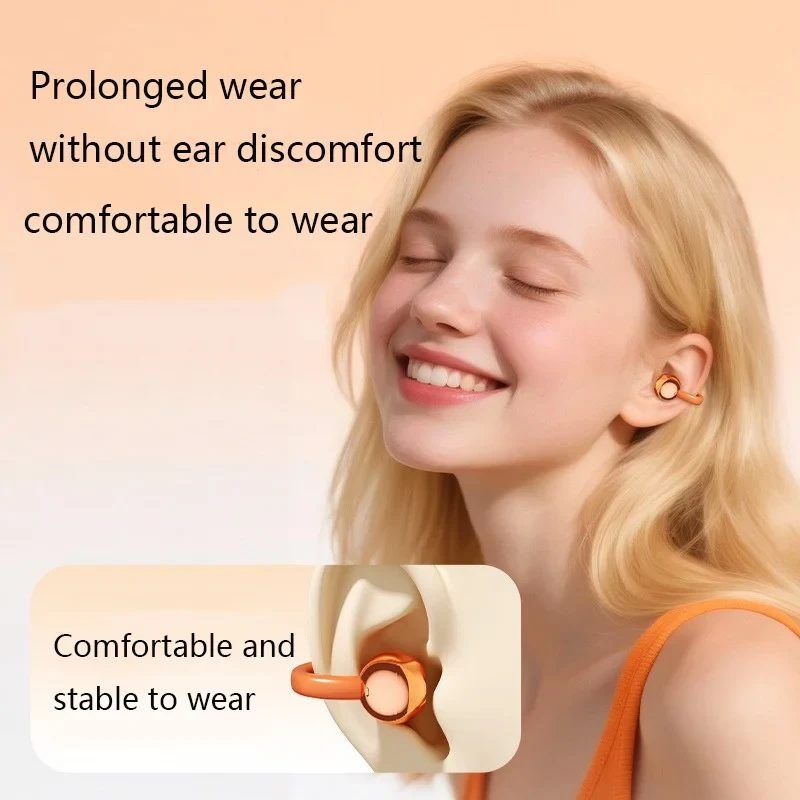

★★★★★
“Los uso para trabajar y para correr. No se mueven y el estuche es lo más mono que tengo en el bolso.”
Se enganchan a la oreja en vez de meterse dentro: aguantan todo el día y no te aíslan del mundo. Su estuche es un mini bolso con cadena y llavero de osito.

Auriculares inalámbricos de tipo clip-on (no entran en el oído): se enganchan en el borde de la oreja y se aguantan solos. Llevan Bluetooth 5.4, altavoz de 10 mm con anillo de cobre y micrófono para llamadas.
El estuche es la otra mitad del producto: un mini bolso con cadena y llavero de osito, con 200 mAh de batería dentro para recargar los auriculares sobre la marcha.

La tapa lleva un cierre magnético: la abres con un gesto y los auriculares aparecen dentro. La cadena no es decorativa, sirve para llevarlo colgado de la correa o del llavero.
Dentro de un estuche de 9 centímetros caben tres cosas: los auriculares, su batería de reserva y un cierre que aguanta en el bolso. Pulsa los puntos para verlo.

Al no tapar el oído, sigues oyendo el tráfico y las conversaciones cuando te hablan. Y como no van dentro, no hay presión ni picor después de tres horas.
Comprar los TWS
La foto de la ficha cambia según el color que elijas al comprar.
Reseñas de ejemplo: sustitúyelas por las reales cuando tengas las primeras.
“Los uso para trabajar y para correr. No se mueven y el estuche es lo más mono que tengo en el bolso.”
“Suenan bien para lo pequeños que son. El volumen máximo se queda algo corto en la calle.”
“Buscaba algo que no me tapara el oído para ir en bici. Estos son exactamente eso.”
No. El clip abraza el borde de la oreja y no depende de la forma del conducto, así que aguanta el movimiento. Si notas que van flojos, gira el clip hacia dentro.
Sí, se conectan por Bluetooth con cualquier móvil, tablet u ordenador.
El fabricante declara hasta 20 h de música sumando el estuche. En uso real a volumen medio suele quedarse algo por debajo; el estuche recarga los auriculares dos o tres veces.
El envío es gratis y el plazo se calcula al finalizar la compra. Tienes 30 días de garantía: escríbenos a contacto@gineska.com y lo arreglamos.